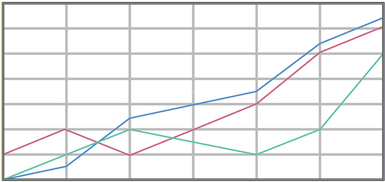
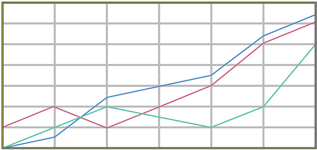

Macro-Advisory provides a bespoke consulting service for investors and companies who want to better understand the opportunities and risks in making investments and conducting business in Russia and Central Asia...
...Russia and the Central Asian states can be challenging locations for foreign investors while often misleading perceptions about what is really happening in each country can prevent investors from sharing in the steady growth of the world's xxth largest economy and the fifth largest consumer market. The founding partners of Macro-Advisory have a combined thirty-five years' experience living and working in Russia and Central Asia and that ideally places them to help guide investors away from risk and towards growth and profit
... Macro-Advisory's client base will include macro hedge funds, venture capital funds, international corporations and private investment groups who will benefit from either a fully bespoke consulting service or from the partner’s insights published in regular, subscription only, private reports...
...for more information refer to the Contact page.
Bespoke CIS Consulting
info@macro-advisory.com
+7 916 349 2039
Myasnitskaya 24/7
Dom 3-4/4
Moscow 10100
Russian Federation
Despite the 'Noise', Russian's Wealth is Increasing *

Source: Historic - Federal Statistics Service, 2013 Forecast - Sberbank Investment Research
+7 916 349 2039
Dom 3-4/4
Moscow 10100
Russian Federation
Despite the 'Noise', Russian's Wealth is Increasing *

Source: Historic - Federal Statistics Service, 2013 Forecast - Sberbank Investment Research